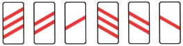
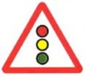
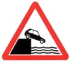
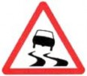

111.** Железнодорожный переезд со шлагбаумом.
** Первая цифра показывает номер группы дорожных знаков, вторая - номер подгруппы, третья с последующей буквой или без нее - порядковый номер внутри подгруппы, что образует обозначение одного определенного знака. Цвет фона дорожных знаков обозначается буквами: "s" - синий, "v" - белый и "к" - желтый. Если все знаки подгруппы имеют одно название или упоминается общий для них признак, то при рассмотрении отдельных знаков третья цифра также опускается.
Обозначение не оборудованного шлагбаумом железнодорожного переезда.

Дополнительное предупреждение о приближении к железнодорожному переезду. Число наклонных полос на знаке уменьшается по мере приближения к железнодорожным путям. Полосы имеют уклон в сторону проезжей части.
Водитель должен уступить дорогу водителю транспортного средства, приближающегося справа. Знак, установленный перед перекрестком дороги с твердым покрытием и гравийной или грунтовой дороги, а также перекрестком гравийной и грунтовой дорог, превращает названные перекрестки в перекрестки равнозначных дорог.
Второстепенная дорога пересекает главную или примыкает к ней.


Впереди крутая набережная, причал, движение по дамбе, набережной или крутому уступу.
Поворот крутой или с ограниченной видимостью, а также его направление.
Участок дороги с опасными поворотами и направление первого поворота.

Впереди участок дороги, повышенная скользкость которой обусловливается не наличием снега или льда, а низким коэффициентом сцепления шин с дорогой при влажном дорожном покрытии.
Впереди участок дороги с последовательными неровностями (152), или с одиночной выбоиной (153), или с одиночным возвышением, не являющимся порогом (154).
Участок дороги с покрытием, где выброс камней из-под колес может создавать опасность для участников дорожного движения и транспортных средств.
Искусственное возвышение для обеспечения пониженной скорости движения.
Различные работы, выполняемые на дороге или вблизи нее.
Переход от дороги с твердым покрытием к гравийной или грунтовой дороге.
Изображение на знаке показывает сужение дороги с одной или с обеих сторон.
Впереди дорога с двусторонним движением.
Впереди пересечение с дорогой (проезжей частью), где одностороннее движение переходит в двустороннее.
Участок дороги, где пешеходы передвигаются по проезжей части.
На знаке может быть изображение характерного для данного места животного.
Впереди может быть затор.